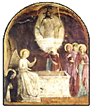

Para estos tiempos, hace once años, mi ángel de la guarda me miró: "Y ahora, qué excusas vas a poner?".
La verdad es que yo venía desde Semana Santa, dando vueltas ... aunque "intelectualmente decidido", y yendo a misa a las mañanas ... sin contarle nada a nadie , en soledad total, como de costumbre.
Ya no me quedaban ni las excusas de los exámenes. Yo tenía 24 años, acababa de dar la última materia de Ingeniería a mediados de septiembre, y para el día de la primavera mis amigos se iban al pago, y yo quedaba en Bs As: un fin de semana solo, y sin preocupaciones mundanas...
Y bueno ... ese sábado tomé coraje y, medio como quien se tira a la pileta (o un precipicio), fui y encaré a un cura en el confesionario; era un gallego carmelita (iba a una iglesia de carmelitas, para sentirme acompañado por Teresa).
Y en ratito, estaba de vuelta "en casa". Una de las poquísimas decisiones inteligentes que uno ha tomado en la vida.
Un poco en acción de gracias, pues: abstinencia de weblog hasta el lunes.
La librería Blaton (si no recuerdo mal el nombre) es un local chiquito, en la galería de calle Florida 681, bajando la escalera, en el centro de Buenos Aires. Atendido por una mujer con acento extranjero, tiene mucho material de religión y filosofía de calidad; mayoría en castellano, pero algo en francés (y alemán y otros); mayoría nuevos, pero algunos usados también.
Pasé el otro día ... Había una especie de nueva Catena Aurea, en varios tomos y abarcando no sólo los evangelios sino -creo- toda la Biblia; se me hacía agua la boca, pero los precios de esas cosas -editoriales españolas, por lo general- se han ido por las nubes.
Ah... Catena Aurea se llamaban esos comentarios a los evangelios que se hacían (en la Edad Media, sobre todo), recopilando todo lo que habían dicho los "Padres de la Iglesia" y glosas autorizadas... Hay uno que se atribuye a Tomás de Aquino, nada menos ; alguna vez comentaremos algo sobre él... en Internet y en español, que yo sepa, sólo se encuentran los dos primeros capítulos de Lucas (la infancia de Jesús). Es muy poco (la Catena completa de Tomás abarca los cuatro evangelios completos), pero sirve para apreciar de qué se trata.
Se encuentra más completa en inglés,
(el sitio ese, la Christian Classics Ethereal Library es notable;
en español no hay nada ni remotamente parecido).
Y en latín se encuentra, no sólo la Catena completa, sino todas las obras
de Santo Tomás (!!). Lástima
que están sin editar, lo cual lo torna poco legible (digo yo, para disimular mi completa
ignorancia del latín).
Adolfo Ramírez contraataca, contestando -con mucha cortesía- mis "objeciones" sobre el socratismo de San Juan.
Así me gusta.
Veremos si la seguimos....
La minidiscusión ha sido mencionada -también con generosidad- en
Libro de Notas.
Se agradece.
Una foto, en Clarín:
-
... los óvulos serán fertilizados por los espermatozoides elegidos y, luego,
2 o 3 de los 10 o 12 embriones resultantes serán implantados en el útero.
A esta altura, el tratamiento ya costó 6.500 dólares....
"...tenemos que ser realistas y aceptar que hay mucha gente que, incluso, está dispuesta a abortar un embarazo si el monitoreo temprano les anuncia el sexo ‘equivocado’. Y, a mi modo de ver, es mejor tener un hijo de un determinado sexo que recurrir al aborto”, dijo el pragmático Craft
-
12 Ahora bien, si se predica que Cristo ha resucitado de entre los muertos
¿cómo andan diciendo algunos entre vosotros que
no hay resurrección de los muertos?
 13 Si no hay resurrección de los muertos, tampoco Cristo resucitó.
14 Y si no resucitó Cristo, vacía es nuestra predicación, vacía también vuestra fe.
15 Y somos convictos de falsos testigos de Dios porque hemos atestiguado contra Dios que resucitó a Cristo, a quien no resucitó, si es que los muertos no resucitan.
16 Porque si los muertos no resucitan, tampoco Cristo resucitó.
17 Y si Cristo no resucitó, vuestra fe es vana: estáis todavía en vuestros pecados.
18 Por tanto, también los que durmieron en Cristo perecieron.
19 Si solamente para esta vida tenemos puesta nuestra esperanza en Cristo, ¡somos los más dignos de compasión de todos los hombres!
20 ¡Pero no! Cristo resucitó de entre los muertos como primicia de los que durmieron.
Ya entonces, al parecer, había intentos de negar la resurrección (la nuestra y la de Cristo)
y hacer del cristianismo una "doctrina", o una "disciplina de vida".
Sea lo excelente que fuere el cristianismo como sistema ético, como fermento social,
como consuelo y alimento anímico, o como filosofía ; si no fuera más que todo
eso, si no sale del plano "natural" .... si Cristo no resucitó, los cristianos
somos unos infelices -en todos los sentidos de la palabra.
Otros 45 segundos de tango:
Mal de amores, de Pedro Laurenz, por el Nuevo Quinteto Real, con Horacio Salgán al piano.
Hablando de apegos, en otro plano, Steven de Flos Carmeli trae un largo y valioso post (en inglés); y Disputations (dominico "vs" carmelita) lo comenta :
-
... lo más peligroso es desarrollar el hábito de estudiar y predicar
sin oración. Y esto puede ser un hábito duro de romper,
especialmente si te sentís exitoso en tus
estudios o en tu prédica. ¿Para qué va uno a correr el riesgo de romper
algo que funciona?
Y en verdad, rezar es una de las cosas más riesgosas que podemos hacer. Dios puede llegar a contestarte...
Flos Carmeli también algo sobre las traducciones modernas bíblicas, sobre lo cual comentaremos algo.
Muchos (no todos!) weblogs católicos de EEUU, sobre todo algunos de entre los más concurridos y discutidores, suelen ostentar -como ya notamos una vez- una actitud militante "partidaria" -en general, del lado de la derecha conservadora americana-. Así, aunque todos (webloggers y comentadores de afuera) se muestren unidos en torno al catolicismo, las simpatías y antipatías que saltan huelen más bien a esos apegos a pasiones ideológicas.
Es divertido (o deprimente, según cómo se lo mire) ver la facilidad con que esa defensa egoísta del propio yo dentro del refugio de "lo social" adopta (ante los otros y ante el espejo) el disfraz de una defensa de la fe, de la verdad o del bien.
Hace pocos días, los obispos de EEUU
dijeron a Bush que una guerra unilateral contra Irak no era
justificable (algo parecido había dicho el Papa).
Amy Welborn
citó la noticia; hay 28
comentarios
del público.
Muchos de ellos, contrariados e irritados contra los obispos. "no están en condiciones
de dar lecciones sobre moral política"; "con obispos tan sensibles, nunca habríamos
ganado la batalla de Lepanto" (!) "; "el deber de Bush es NO ser pacifista, y defender
la Constitución (?) y la Gente" (y argumenta: así como lo más 'seguro' es asumir que
el feto es una persona y por lo tanto decir no al aborto, por el mismo razonamiento,
y dada la clara evidencia de que Saddam tiene armas nucleares ... etc);
"la carta no tiene valor analítico; los obispos -como la ONU- siguen
el camino fácil" ; "no tiene experiencia ni formación en temas militares
ni en política exterior" (tampoco el Papa, si a eso vamos), etc, etc
Otros webloggers se han puesto diligentemente a hacer demostraciones "tomistas" de que la guerra sería una guerra justa.
Estos son los mismos católicos que se indignan contra los liberales de izquierda que se dicen católicos, pero que se resisten a aceptar el magisterio de la Iglesia cuando habla de lo que ellos no quieren escuchar ... (moral sexual, para empezar).
Y no estoy hablando sobre la justificación o no de la guerra
con Irak (no sé, de eso no opino); ni siquiera del Magisterio
de la Iglesia; hablo de algo que debería ser el ABC de la
formación moral de cualquiera ... pero mucho más de un
cristiano: la certeza de que cuando un hombre
"se indigna a favor del Bien", y más cuando esa
indignación es realimentada por lo social
(amigos, país... iglesia), el alimento de esa
pasión raramente es puro; "del corazón
del hombre sale lo que mancha". Y, que cuando
esa persona proclama la urgencia de "cortar la cizaña"
para que no arruine el trigo de todos, en el fondo está cuidando
su propio tesoro (que muchas veces no es más que un
manojo de miedos y resentimientos). Y que
la cizaña no se puede cortar así.
Y, sobre todo, que cuando una persona está así
de apasionada contra alguien, y la mayoría de sus
amigos le aconsejan que se calme, y que su
pasión es exagerada y malsana ... casi siempre
los amigos tienen razón.
Para ver todo esto, repito, no hace falta ser cristiano. Pero
ser cristiano, y no querer verlo... es triste.
Dejé para lo último uno de los 28 comentarios: uno dijo:
"Rezo para que Bush no escuche a los obispos"
Yo hubiera creído que la obligación elemental de un cristiano,
en una situación así, es rezar para tener luz; para
discernir los hechos y desapegarse -aunque sea
dolorosamente- de las pasiones;
para estar en la verdad.
Hay que decir, finalmente, que muchos saben conservar la sensatez ... cosa que es muchísimo más fácil decir que hacer, claro está.
El Padre Nuestro en idiomas élficos: en Sindarin y en Quenya (las dos lenguas principales que inventó Tolkien).
Navegando por ahí pueden encontrar otras cositas relacionadas... el audio de la versión Sindarin, un Ave María en Sindarin ... y hasta los capítulos primero y segundo del Génesis en lengua Quenya !
-
1 I yessessë Eru ontanë Menel ar Cemen. 2 Cemen né cumna ar lusta, ar ëanë mornië or i undumë, nan Eruo Súlë willë or i neni.
3 Ar equë Eru: "Eä cálë!" Ar ëanë cálë. 4 Eru cennë i cálë né mára, ar Eru ciltanë i cálë i morniello. 5 Ar Eru estanë i cálë Aurë, ar i mornië estanéro Lómë. Ar ëanë sinyë, ar ëanë arin, i minya aurë.
....
De los varios artículos en el sitio de Adolfo Ramírez Corona, hay uno curiosamente titulado San Juan: un socrático en Tierra Santa .
El cuarto evangelio, en esa interpretación, se incribiría en una tradición filosófica que va desde Sócrates a Wittgenstein y que se caracterizaría por una especie de "agnosticismo": la humildad intelectual, el "sólo sé que no sé nada"; no creerse sabedor del cuál es el camino, etc.
Podría discutirse en qué medida -y en qué planos- esta actitud (o postulado ?) es una exigencia del auténtico filosofar.
Pero lo que quiero objetar yo aquí es más bien el ejemplo traído ... un poco de los pelos, a mi parecer. La escena prototípica, es la de Jesús interrogado por Pilato, según relata evangelio de San Juan:
-
PILATO: ¿Eres tú el rey de los judíos?
JESÚS: ¿Es tuya esa pregunta o la repites de otros?
PILATO: ¿Acaso soy judío? Te han entregado a mí. ¿Qué has hecho?
JESÚS: Mi reino no es de este mundo. Si lo fuera, mi guardia me hubiera defendido. Pero mi reino no es de acá.
PILATO: ¿Entonces eres rey?
JESÚS: Tu lo dices: yo soy rey. Vine al mundo a entregar la verdad a los hombres.
PILATO: ¿Y qué es la verdad?
No hay respuesta. Pilato hace mutis.
No me parece.
Primero: La lectura de los evangelios hace ver que Jesús raramente se niega
a contestar preguntas; y parece que las veces que se niega o se
resiste, no es por "humildad intelectual" o
por "ignorancia filosófica"
sino más bien por una especie de desgano o desaliento,
al encontrarse con corazones endurecidos y oídos cerrados.
Se resiste cuando los judíos le preguntan por el caso de la
adúltera a apedrear; se resiste a contestar a los fariseos
endurecidos ("si eres el Mesías dilo claramente")
pero cuando contesta, contesta sin vueltas; se resiste a contestar
en el juicio ante Caifás,
pero cuando finalmente responde es terminante.
Por el contexto, parece bastante claro para mí que
Jesús no contesta a Pilatos por el mismo motivo:
la pregunta había sido la ironía del típico intelectual
posmoderno greco-romano, refinado y escéptico.
No pedía, y no merecía, y no podía tener respuesta.
Segundo (y principal): Jesús en realidad respondió a la pregunta de
Pilato. Pero unas pocas
horas antes... y a oídos abiertos: durante la
larga conversación en la última cena,
(y en el mismo evangelio según San Juan)
Tomás le pregunta
-"¿Cómo podemos saber el camino?".
Un filósofo griego, (y el consabido sabio chino
de las historias...) habría contestado algo
como "No hay un camino" o "Tu mismo tienes que hallar
tus propios caminos" o "el camino se hace al andar"
etc. O un simple y humilde "No sé".
Jesús en cambio dice esta enormidad:
-"Yo soy el camino, la verdad y la vida"
contestando a Tomás ... y a Pilato, y a todos.
A propósito de esta respuesta implícita pero terminante a Pilato, algún medieval compuso un famoso anagrama :
-
- PILATO: Quid est veritas ? (qué es la verdad?)
- JESUS : Est vir qui adest (es el varón que tienes delante)
Me llega el reporte semanal del motorcito de búsqueda que tengo (ahí a la izquierda) para buscar en los contenidos de este weblog ; (gentileza de atomz.com, lo recomiendo).
Alguien que cayó acá -seguramente, como muchos, buscando en Google por la palabra "apocalipsis", se metió en el buscador local y escribió esto: "cuándo será".
Me pasan esta información de un recital de piano a beneficio, mañana, en Buenos Aires:
-
Concierto: Fundación Vibrar.
A Beneficio de Caritas Argentina.
Jueves 19 de agosto, a las 20 hs.
Vera 863, entre Serrano y Gurruchaga
Valor de la entrada:alimento no perecedero
Informes y reservas: 4326-6524, de 11 a 17 hs.
Actuación del pianista José Luis Juri
Obras de Debussy, Chopin y Ginastera
En inglés:
Tres buenos posts en tres buenos weblogs:
Sólo para porteños (bueno.... residentes en Buenos Aires):
Y ya que estamos en culturosos: no se puede negar que Clarín mantiene (todavía, y a diferencia de los otros) un staff de críticos artísticos de cierto nivel; ver, por ejemplo, esta crítica al último de Peter Gabriel.
De un post de TS O'Rama, de Video meliora, proboque; Deteriora sequor :
-
... [el sentido de la oportunidad de Pablo VI]:
promulgar la
Humanae Vitae justo en el peor momento de la historia
occidental, cuando las defecciones, la falta de confianza y de fe en la Iglesia
eran masivas. Y haber tomado semejante decisión en medio de la tormenta; conmueve;
lo veo como una especie de Don Quijote, pidiendo lo imposible a los hombres modernos del '60.... O como
Cristo, acaso.
Malcom Muggeridge ha dicho:
- Lo que me decidió finalmente a hacerme católico fue la posición firme
de la Iglesia contra la anticoncepción y el aborto... Así como los romanos
de la decadencia trataban a la comida como un fin en sí mismo,
acudiendo a los "vomitorios" para poder volver a la mesa y seguir
tragando manjares, de igual modo los hombres de hoy están
terminando en una especie de vomitorio sexual.
La posición de la Iglesia es la correcta. Y su oposición
a la anticoncepción, la llena de honra, aún cuando esa oposición
sea derrotada. Pienso que, cuando los años pasen, la gente
juzgará que fue un esfuerzo heroico para evitar el desastre moral.
Y una página con material sobre Pablo VI.
Murió el famoso cardenal vietnamita Francisco Javier Nguyen Van Thuan; un peso pesado, que pasó trece años preso, y que en la cuaresma del 2000 predicó los ejercicios espirituales al Papa.
Hoy a la mañana encontré (habiendo limpiado mi casilla la noche anterior), 36 mails basura, la mayoría coreanos. Sumados a los que recibí después hacen más de 60 mails de spamming recibidos en un día; debe ser un record.
El Padre Nuestro según Simone Weil
(continuación)
"Y no nos dejes caer en la prueba, mas líbranos del mal"
-
La única prueba para el hombre es estar abandonado a sí mismo en contacto con el mal.
La nada del hombre se verifica entonces experimentalmente.
Aunque el alma haya recibido el pan sobrenatural en el momento de pedirlo,
su alegría va unida al temor porque sólo le fue posible pedirlo para el presente. El futuro sigue temible.
No tiene derecho a pedir el pan del mañana,
pero expresa su temor en forma de súplica.
Allí termina.
La palabra "Padre" ha comenzado la plegaria, la palabra "mal" la termina.
Hay que ir de la confianza al temor.
Sólo la confianza da fuerza suficiente para que el temor no sea causa de una caída.
Después de haber contemplado el nombre, el reino y la voluntad de Dios, después de haber recibido el pan sobrenatural y de haber sido purificada del mal, el alma está dispuesta para la verdadera humildad que corona todas las virtudes.
La humildad consiste en saber que en este mundo toda
el alma, no sólo lo que se llama el yo en su totalidad,
sino también la parte sobrenatural del alma que es
Dios presente en ella, está sometida al tiempo y a las vicisitudes del
cambio.
Hay que aceptar absolutamente la posibilidad de que todo lo que en sí
es natural sea destruído.
Pero también hay que aceptar y rechazar a la vez la posibilidad de que la parte
sobrenatural del alma desaparezca.
Aceptarlo como un hecho que no se produciría si no fuese
conforme a la voluntad de Dios.
Rechazarlo como algo horrible.
Hay que tener miedo, pero que el miedo sea como el coronamiento de la confianza.
Los seis pedidos se corresponden de dos en dos.
El pan trascendente es lo mismo que el nombre divino.
Es lo que opera el contacto del hombre con Dios.
El reino de Dios es lo mismo que su
protección extendida hasta nosotros contra el mal; proteger es una función real.
El perdón de las deudas de nuestros deudores
es lo mismo que la aceptación total de la voluntad de Dios.
La diferencia reside en que en los tres primeros pedidos, la atención se dirige sólo hacia Dios. En los tres últimos se lleva la atención hacia si para obligarse a hacer de estos pedidos un acto real y no imaginario.
En la primera mitad de la plegaria se comienza por la aceptación. Después se permite un
deseo. Luego se lo corrige volviendo a la aceptación.
En la segunda mitad el orden cambia;
y termina con la expresión de un deseo.
Es que el deseo se ha tornado negativo; se expresa como
un temor; por tanto corresponde al más alto grado de humildad,
lo que conviene para terminar.
Esta oración contiene todas las demandas posibles; no se puede
concebir una plegaria que no
esté encerrada en ella. Es a la plegaria como Cristo a la humanidad.
Es imposible
pronunciarla una vez dando a cada palabra la plenitud de la atención,
sin que un cambio tal vez infinitesimal pero real se opere en el alma.
Notas:
Última petición del Padrenuestro. Al menos, en la enumeración de Simone Weil. Ella toma las dos partes de la frase como una unidad. Dos detalles de traducción han dado dolor de cabeza a muchos: por un lado, la traducción más literal parece ser "no nos induzcas a" más bien que "no nos dejes caer en"; se ha preferido esta traducción, menos fiel a la letra pero más fiel al espíritu... es de esperar (Dios no puede "inducir a tentación"); SW parece dar esto por bueno. Segundo: la conjunción de los dos miembros de la frase; literalmente es una adversativa ("mas", "pero"), cosa extraña si uno lo piensa un poco; la nueva traducción de la Iglesia se desembaraza de esta dificultad: "no nos dejes caer en la tentación y líbranos del mal". SW se queda con el tradicional "mas", pero de su comentario (y del hecho de que considere a todo como una sola petición) se ve que no hay ninguna oposición: las dos frases dicen más o menos lo mismo, la conjunción bien podría ser un "sino" (no hagas tal cosa, sino tal otra).
También el hecho de traducir "prueba" en lugar de "tentación" acentúa la unidad de la petición: no caer en la prueba, es más o menos lo mismo que ser liberados del mal. No se trataría de tentaciones individuales (y pecados sueltos) en la primera parte, y del "mal en general" en la segunda.
Por otro lado: el "mal", también a veces ha sido traducido -o interpretado- como
"el Malo", "el Maligno" ; o sea, Satanás. Curiosamente, el mismo
Juan Pablo II ha hecho suya esta interpretación: para él no se trata
de un "mal en abstracto", sino del mismo Diablo; esta interpretación
ha entrado en el Catecismo.
El comentario de SW no apunta hacia ahí (no recuerdo que ella mencione
al Diablo jamás), aunque tampoco es
incompatible con esa idea, como puede verse...
Para ella, esa "caída en el mal" es lo mismo que "perder el alma".
Me dirán que ella no dice eso, sino "la destrucción del alma,
también en su parte sobrenatural"; y que esto no es lo mismo
que aquello, lo cual se asocia más bien a la idea
de "condenarse".
Yo creo, sin embargo, que es lo mismo.
"Caer en la prueba", ser "vencidos por el mal", es el fracaso
del alma (en su parte "sobrenatural", la que tiene a Dios como fin);
es su derrota, su muerte y su aniquilación. Pero
¿esto es lo mismo que "irse al infierno" ? Yo diría que,
en última instancia, es muy posible.
Ey! - me dirá alguno- eso no es muy ortodoxo que digamos... Si
condenarse es lo mismo que "ser aniquilado" ¿ qué se hace
del dogma de "la eternidad de las penas del infierno", etc ?
Ah... puede ser.... aguas profundas;
lo dejo por ahora, para cuando reordene
mi biblioteca; en todo caso, (y muy dudosamente)
diría que la condenación bien podría ser algo-así-como
una (auto)destrucción del alma-sobrenatural, sin que
esto necesariamente implique un aniquilamiento de la persona.
En todo caso: estos modos de ver la cuestión, pueden quedar aclarados y armonizados, recordando la advertencia de Jesús:
-
"No temáis a los que matan el cuerpo, y después de esto no pueden hacer más.
Os mostraré a quién debéis temer: temed a aquel que, después de matar, tiene poder para arrojar a la Gehenna. Sí, os repito: temed a ése."
Temor, no de los "males" terrenos. Así como el "pan que se pide" no es el pan natural (ni siquiera en los sentidos analógicos de la palabra), el mal que tememos es el sobrenatural, el de perder el alma.
Simone asocia esta petición con la virtud de la "humildad".
La humildad de sabernos esencialmente frágiles, frente al universo.
Reconocer esta fragilidad en nuestra parte "natural" (cuerpo y
psiquis), y aceptarla absolutamente, sin temor ni amargura,
es un deber.
Pero la fragilidad de nuestra parte "sobrenatural" (espíritu)
debe ser reconocida y aceptada en otro sentido;
como una posibilidad cierta, y -llegado el caso- justa
(es decir, no rebelarse) pero al mismo tiempo horrible.
Más o menos como la idea de la muerte posible de un ser
querido; (al fin de cuentas, Jesús mismo lloró ante
la muerte de Lázaro).
Todo esto resultaría algo angustiante, si no fuera que empezamos llamando a Dios "nuestro Padre"; en la actitud del hijo que suplica, podemos -y debemos- juntar la confianza con el temor.
...Y taconeando salió. (Real Audio; 45 segundos)
La voz entrañable de Edmundo Rivero, se luce en este tango -no muy conocido- con acompañamiento de guitarras.
Más del feo, acá.